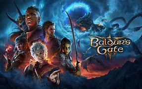

En "Baldur's Gate 3", los jugadores se sumergen en un viaje épico lleno de peligros y misterios, mientras exploran lugares fascinantes y enfrentan a enemigos formidables. La personalización de personajes es amplia, permitiendo a los jugadores crear héroes únicos con habilidades y rasgos distintivos. Los diálogos están cargados de opciones que influyen en la historia y en las relaciones con los personajes del juego. La música y los efectos de sonido complementan perfectamente la atmósfera, sumergiendo aún más a los jugadores en el mundo de Faerûn. En resumen, "Baldur's Gate 3" es una experiencia inolvidable que deja una marca duradera en los aficionados a los juegos de rol.
